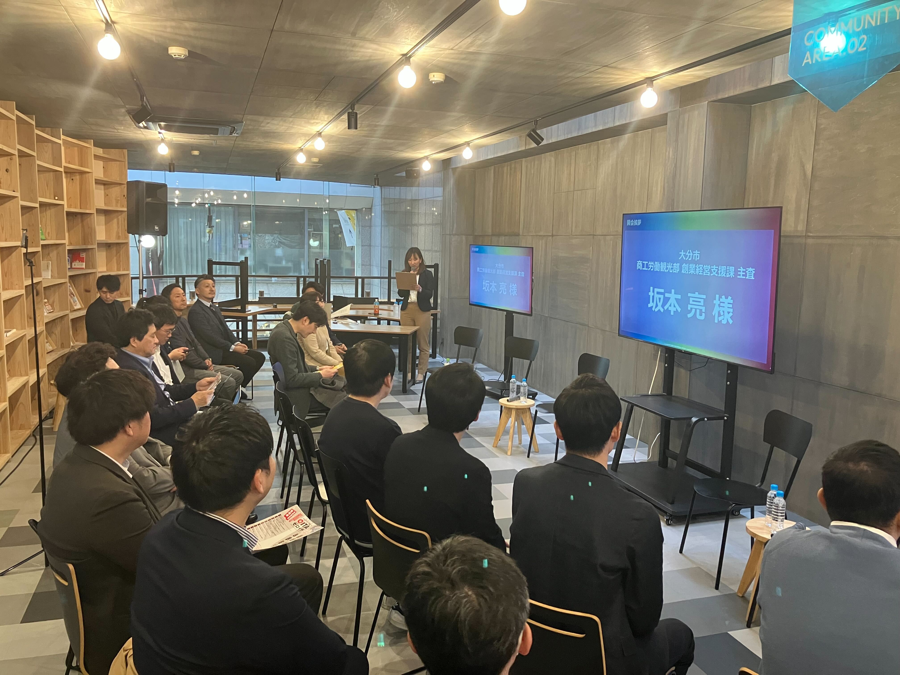
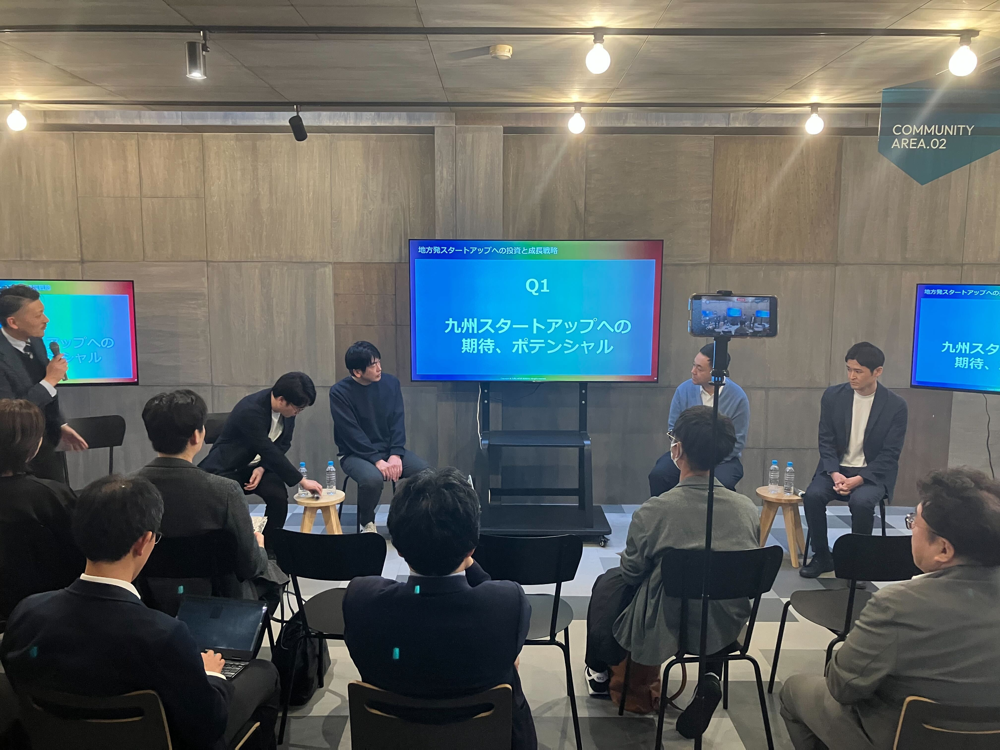
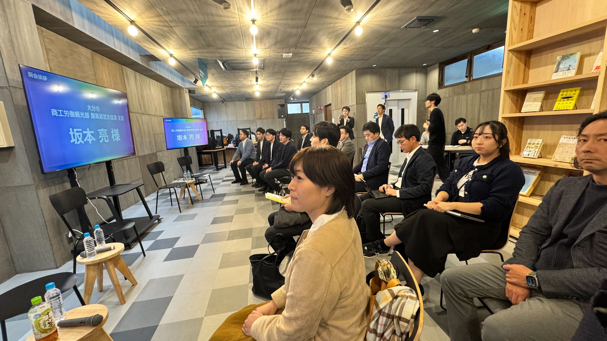
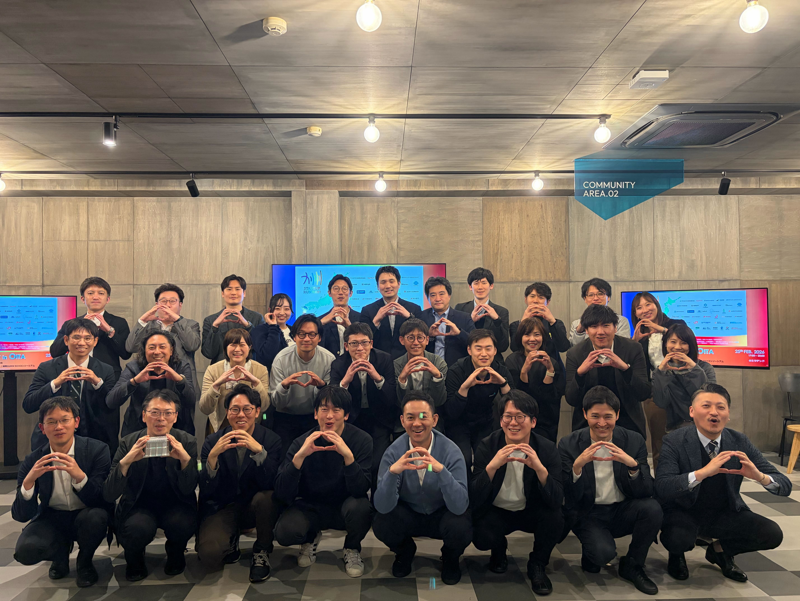

「なぜこの土地で起業し、ここから成長するのか」──。九州のスタートアップエコシステムを加速させるべく、地銀・VC・自治体が一堂に会した「九州スタートアップランウェイ in 大分」が開催された。銀行系VCから独立系VCまで多様なキャピタリストが集結した第1部のパネルディスカッション、大分県の宇宙産業戦略とディープテックスタートアップの協業を語った第2部、そしてSaaS企業がM&Aで事業承継に挑む第3部と、3つのセッションを通じて「地方発スタートアップの新たな勝ち筋」が浮かび上がった。

第1部：地方発スタートアップへの投資と成長戦略
大阪支社
コンサルティング
キャピタル
メガ・地銀・独立系──多様なVCが九州に集結
第1部に登壇したのは、銀行系VCから独立系まで、投資スタイルの異なる4名のキャピタリストだ。三菱UFJキャピタルの渡部直樹氏は、大阪支社から九州・中四国エリアの投資活動を担当。直近1年間で北九州のロボット系スタートアップ、福岡のコンテンツ系企業、宮崎の培養技術やアグリテック企業など、幅広い分野に出資してきた。同社の旗艦ファンドは350億円規模の第15号ファンドで、年間約100件の投資を実行。QPS研究所をはじめとする九州発のIPO実績も積み上げている。
きらぼしコンサルティングの岩田元氏は、茨城県出身ながら東京・羽田の「きらぼしコネクトスペース」を拠点にシード・アーリーステージへの投資を手がける。注目すべきは、同社が単なる投資にとどまらず、スタートアップのプロダクトを自ら販売代理する「セールス支援型アクセラレーター」を展開している点だ。東京のクライアントに対して九州発スタートアップの製品を売り込む──まさに地方と東京をつなぐハブの役割を担っている。
ミライドアの本田勇人氏は、旧フューチャーベンチャーキャピタルから転じ、地方創生に特化したファンドを全国展開する。大分では豊和銀行と共同で設立した「大分創業事業承継ファンド」を運営しており、当初3億円でスタートしたファンドは増額を経て5億円規模に成長。大分に本社を置く企業を中心に16社への投資実績を持つ。同社の特徴は、IPOをマストとしない投資スタイルにある。株式投資でありながら、エグジットは「自己株買い戻し」も許容する。つまり、大きな市場を狙うスタートアップだけでなく、地域に根ざしながら着実に利益を積み上げる企業にもリスクマネーを供給しているのだ。
NCBベンチャーキャピタルの井土裕章氏は、西日本シティ銀行グループに属するVCで、2号ファンド30億円を運用中だ。井土氏自身、大分支店に5年以上勤務した経験を持ち、その後QBキャピタルへの外部出向でスタートアップ投資の実務を学んだ。大学発スタートアップへの投資も手がけるなど、地銀系VCとしてはユニークなポジションにいる。

「九州止まり」では投資できない──拡張性への視線
パネルディスカッションの核心は、「九州発スタートアップに求める拡張性」だった。渡部氏は「九州のみでは市場の天井がすぐに見える。IPOやM&Aによるリターンを前提とする以上、九州外、できれば海外への展開を見据えてほしい」と明快に語った。九州からいきなり海外を目指す事業計画も「全然否定するものではない」と付け加えている。
「このサービスやプロダクトが"なくてはならないもの"かどうか。そこをすごく重視しています。それって汎用性があるし、北海道の会社だって使えるし、関西だって、九州だって使える」 ──岩田 元 氏（きらぼしコンサルティング）
岩田氏は地域の区切りにとらわれない投資哲学を示した。一方で、本田氏は「47都道府県の多くに行き渡るかどうかが大事。日本は1億3000万人の市場を持つトップランカー。どの県でも必須となるようなプロダクトを目指してほしい」と、国内市場の大きさを活かす視点を提示した。

人材とネットワーク──地方スタートアップの成長エンジン
登壇者全員が口を揃えたのが「人材」の重要性だ。井土氏は、九州の研究開発型スタートアップにおいて「ビジネスサイドの強い経営者が入ると一気に変わる」と指摘。CSOやCOOクラスの人材を採用することで、組織構造も事業展開の方向性も大きく転換するケースを目にしてきたという。
渡部氏もこれに同意し、「高スキル人材は東京で確保しに行くケースが多い。人件費は高いが、舵を切っているところが成果を出している」と述べた。さらに「バンバン東京や大阪に支店・事務所を構えた方がいい。京都のように、拠点がないと相手にしてもらえない市場もある」と、物理的な進出の重要性にも言及した。
岩田氏は別の角度からアプローチを示した。東京・有楽町にある東京都のインキュベーション施設「TIB（Tokyo Innovation Base）」では、九州をはじめ各地のスタートアップイベントが開催されているという。「大学を出て東京に来た大分出身者が、こうしたイベントで地元とつながり直す。その"関係人口"こそが、エネルギーを生む」と、地元ネットワークを東京で再構築するという発想を提案した。
第1部のポイント
九州発スタートアップに投資家が求めるのは「地域に根ざしつつも全国・海外へ拡張する意志」だ。そのためには、ビジネスサイドの人材確保、東京とのネットワーク構築、そして地域の支援制度のフル活用が鍵となる。本田氏の「まず地域の支援を使い倒し、えこひいきされる存在になれ」というメッセージは、地方発スタートアップにとって実践的な第一歩だろう。
第2部：宇宙×地域産業──大分県とディープテックの協業最前線
先端技術挑戦課
（モデレーター）
大分空港が「宇宙港」になる日
第2部では、大分県の宇宙産業戦略と、それに呼応するディープテックスタートアップの取り組みが紹介された。大分県先端技術挑戦課の守光正氏は、大分空港を宇宙往還機「ドリームチェイサー」の着陸拠点とする「スペースポート構想」を解説した。
ドリームチェイサーは、米シエラスペース社が開発するスペースシャトルの小型版ともいえる宇宙往還機だ。2024年11月にはケネディ宇宙センターで機体の試験が行われ、初号機の打ち上げは今年後半を予定している。打ち上げ時はロケットに格納され、帰還時には大分空港の滑走路に着陸する計画で、着陸後は約2か月間空港に滞在するという。
この構想の始まりは2019年。当時の知事が海外の宇宙企業との接触をきっかけに「これは来る」と直感し、わずか2年後にはスペースポート計画を正式決定した。守光氏は「当時はまだ宇宙産業が今ほど注目されていなかった。先見性があった」と振り返る。
2040年頃にスペースポートが本格稼働すれば、日本全体で約3,500億円の経済効果が試算されている。興味深いのは、宇宙港本体よりも「宇宙を使った産業」「人材育成」「訓練施設」などの周辺領域のほうが市場としては大きいという点だ。大分県はすでに東京理科大学や東京大学との連携による人材育成、県内製造業の宇宙産業参入支援など、多角的な取り組みを進めている。
「宇宙を使う」を民主化するIDDK
こうした大分の宇宙戦略と共鳴するのが、IDDK代表の上野宗一郎氏が手がける宇宙実験サービスだ。上野氏は北海道の大学で人工衛星の開発に携わり、東芝で半導体開発を経験した後にIDDKを設立。半導体技術をベースに、コンパクトな宇宙実験ユニットを開発している。
このユニットには観察装置や環境制御装置が詰め込まれ、バイオ実験から科学実験まで多様な用途に対応する。宇宙ステーション（ISS）だけでなく、人工衛星やドリームチェイサーにも搭載可能だ。
注目すべきは、その価格帯と地域との連携モデルだろう。宇宙に物を持っていくだけなら約350万円から、実験システムを使う場合でも約1,200万円程度。さらに自治体の補助を活用すれば、この金額が半額になるケースもあるという。すでに6つの県がIDDKの宇宙実験サービスを県内企業に対して支援する体制を整えている。
「焼酎メーカーに"宇宙で商品作りませんか"とベンチャーが直接言ったら怪しまれる。でも地銀さんが間に入って"こんな商品開発の選択肢がありますよ"と紹介してくれたら、だいぶ聞きやすくなる」 ──上野 宗一郎 氏（IDDK）
上野氏が強調したのは、地銀が「信用のブリッジ」として機能する重要性だ。宇宙という未知の領域に地元企業を誘うには、信頼関係を持つ金融機関の後押しが不可欠である。さらに商品開発に対する融資をセットで提案できれば、地元企業が宇宙産業に踏み出すハードルは大きく下がる。
「三拍子」が揃った大分との出会い
大分県とIDDKの出会いは、東京・日本橋で開催された宇宙イベントだった。大分県が宇宙港のPRブースを出展しており、SNSで互いに「友達かも」と認識していた両者がリアルで結びついた。守光氏によれば、協業の親和性は3つある。第一に、ドリームチェイサーで日本に持ち帰る実験ペイロードの開発。第二に、県内のディープテック系ベンチャーと県内企業の技術を掛け合わせる補助制度との連携。第三に、IDDKの実験フォーマットを使った教育プログラムの展開だ。
上野氏は「日本の食文化は発酵食品が多い。発酵食品はバイオの生産物なので、地域の食文化と宇宙実験は相性がいい」と語る。実際に和歌山県では醤油の宇宙醸造プロジェクトが始動しており、大分でも地場産品と宇宙環境を掛け合わせた商品開発への期待が高まっている。無重力環境では地上とは異なる発酵プロセスが起こり得るため、新たなブランド価値の創出につながる可能性があるのだ。
第2部のポイント
大分県が推進するスペースポート構想は、単なる宇宙港の整備にとどまらない。宇宙実験の民主化を進めるIDDKとの協業は、「地場産業×宇宙」という新たな価値創造モデルを示している。自治体の補助制度、地銀の信用力、スタートアップの技術力──この三者の連携が、地方発のディープテック産業を育てる鍵となりそうだ。
第3部：SaaS×M&A──スタートアップが事業承継に挑む理由
（モデレーター）
北九州発SaaS企業が宮崎の建設会社を買収した理由
第3部に登壇したのは、北九州に本社を構えるクアンドの佐伯拓磨氏だ。同社は2017年設立、建設業界向けの現場コラボレーションツール「シンクリモート」を開発・提供するスタートアップで、累計資金調達額は約9億円、Jスタートアップ九州にも選出されている。
2024年12月、クアンドは宮崎の建設会社「南都技研」をM&Aで譲り受けた。SaaSスタートアップによる建設会社の買収は珍しく、全国から反響があったという。佐伯氏はM&Aの狙いを3つ挙げた。
第一に、SaaS事業へのフィードバックループの構築だ。自社グループに建設会社を抱えることで、自社プロダクトの改善サイクルが格段に速くなる。第二に、譲り受けた企業自体の収益改善。自社SaaSやITツールを活用し、人員を増やさずとも売上1.5倍・利益3倍を実現した実績を持つ。第三に、そして最も重要なのが、生産性向上で生まれた「余剰労働力」を活用した新規事業だ。例えば、シンクリモートの顧客である住宅検査会社から「検査業務も請け負ってほしい」という要望があり、南都技研に在籍する一級建築士がその業務を担当する──SaaSの顧客基盤とリアルアセットの掛け算から、新たな収益源が生まれている。
「SaaS単体の限界」という本音
佐伯氏は、M&Aに踏み切った「裏の理由」も率直に語った。SaaSビジネスは美しい積み上げモデルである一方、Jカーブの深さ、顧客獲得コストの高さ、レガシー業界における意思決定の遅さといった課題がつきまとう。展示会への出展費用はワンショット1,000万円、ウェブマーケティングにも毎月数百万円が必要だ。加えて、東証の上場維持基準の変更により、一定規模の売上・利益が求められる時代になっている。SaaS単体で規模を追うことの限界が、M&A戦略の背中を押したのだ。
「黒字で業績もいいけど継ぎ手がいない企業が非常に多い。建設業ではとくに。我々のM&Aリリースを出したら、全国から1日1件ペースで相談が来る。ITスタートアップがバイサイドにいるのは珍しく、そこが優位性だと思っている」 ──佐伯 拓磨 氏（クアンド）
資金調達の壁と地銀への期待
M&Aを実行する際、クアンドは地銀やメガバンクに融資を相談したが、「Jカーブを描いている企業にどうして融資するのか」と断られた経験を持つ。最終的には社債など別の手段で資金を調達したという。ただし、1件目の実績ができたことで「2件目、3件目には融資をつけられる」という感触を得ており、金融機関との定期的なコミュニケーションを続けている。
佐伯氏は地銀との協業に大きな可能性を感じている。地銀は地域の企業情報に精通しており、事業承継に悩む売り手企業とのマッチング、M&Aの仲介、さらにバックファイナンスの融資まで一気通貫で支援できるポジションにある。「案件の発掘からファイナンスまで一緒にやれる。そうした事例を地銀が積み重ねれば、地域経済への寄与も大きい」と語った。
AI時代の戦略──リアルアセットこそが武器になる
モデレーターの両角（F Ventures）がAIによるSaaS市場への影響を問うと、佐伯氏は「だからこそリアルアセットを取得している」と即答した。ソフトウェアだけで完結するビジネスはAIに代替されやすいが、現場の労働力という物理的な資産を持ち、そこにテクノロジーをレバレッジとして掛け合わせるモデルは、AIには容易に侵食されない。入札情報の自動収集など、AIを使った業務効率化を自社グループ内で実践しながら、人を増やさずに売上・利益を伸ばす──クアンドの戦略は、AI時代のスタートアップの一つの解を示している。
今後のM&A戦略については「年間1件ペースで実施したい。2件目、3件目は大分や熊本など九州圏内を中心に、4件目以降はエリアを拡大しながら、各地域の地銀と連携して進めていく」と展望を語った。
第3部のポイント
SaaS×M&Aという一見異色の戦略は、SaaS単体の成長限界、地方の事業承継問題、そしてAI時代のリアルアセットの重要性という3つの文脈が重なって生まれた必然だった。ITスタートアップがバイサイドとなるM&Aモデルは、地銀との協業で加速する可能性を秘めている。

まとめ──九州スタートアップエコシステムの「次の一手」
3つのセッションを通じて浮かび上がったのは、九州のスタートアップエコシステムが次のフェーズに入りつつあるという実感だ。第1部で語られたように、VCは「九州止まり」ではなく全国・海外への拡張性を求めている。しかし同時に、地域に根ざした支援制度や人的ネットワークをフル活用することの重要性も強調された。
第2部の宇宙産業は、大分県という地方自治体がディープテック分野で国際的なポジションを獲得しうることを示した。スペースポート構想を軸に、宇宙実験の民主化、地場産品との掛け合わせ、次世代人材の育成と、重層的なエコシステムが形成されつつある。
第3部のクアンドの事例は、SaaSスタートアップがM&Aを通じてリアルアセットを獲得し、従来のスタートアップモデルとは異なる成長曲線を描けることを証明した。それは同時に、地方の事業承継問題に対するスタートアップならではの解法でもある。
地銀・VC・自治体・スタートアップ──それぞれのプレイヤーが持つ資産を組み合わせることで、東京一極集中では生まれないイノベーションが九州から立ち上がろうとしている。「九州スタートアップランウェイ」は、その滑走路を整備するための重要な一歩となった。